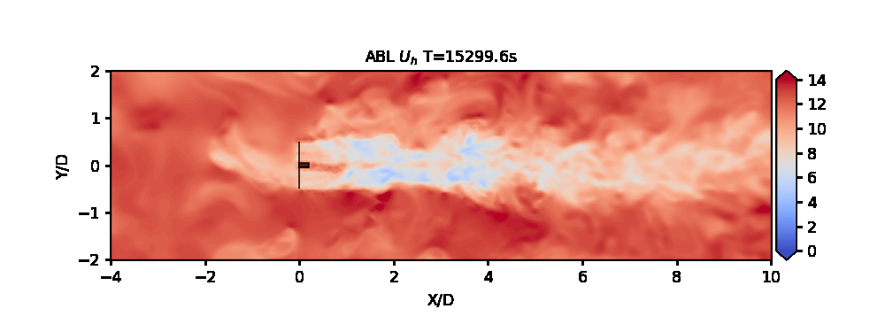

ExaWind Benchmarks

These are reference problems used to evaluate and compare the performance of ExaWind. These benchmarks have been chosen to represent the various capabilities within the ExaWind software stack, featuring cases for each individual solver (AMR-Wind and Nalu-Wind) and the overset hybrid solver. By providing up-to-date examples in an applied context, they also serve as a starting point for researchers setting up similar simulations.
This repository is intended to become a nexus for collaborating among research groups, providing a reference frame for other code capabilities, and hosting external contributions.
Benchmark problems are grouped by the program used to perform the simulation. For each problem included in the repository, the files required to run the case are included in an input_files directory, information about the latest run is contained in a run_info directory, and output data is compiled in a performance directory. Run information primarily includes the headers of log files, which capture the git hash/version recently used to run each specific example, and the footers of log files, which display profiling data and the number of time steps taken. Performance broadly includes both measured results from the simulation, such as physical quantities of interest, and computational timing information. README files provide synopses of each case and the resources used.
References
To cite the cases and data from this repository, please use the following references (which contain the published versions of the cases and results):
Kuhn, M., Henry de Frahan, M., Mohan, P., Deskos, G., Churchfield, M., Cheung, L., Sharma, A., Almgren, A., Ananthan, S., Brazell, M., Martínez-Tossas, L., Thedin, R., Rood, J., Sakievich, P., Vijayakumar, G., Zhang, W. and Sprague, M. (2025), AMR-Wind: A Performance-Portable, High-Fidelity Flow Solver for Wind Farm Simulations. Wind Energy, 28: e70010. https://doi.org/10.1002/we.70010
bibtex citation @article{amrwind2025, author = {Kuhn, Michael B. and {Henry de Frahan}, Marc T. and Mohan, Prakash and Deskos, Georgios and Churchfield, Matthew and Cheung, Lawrence and Sharma, Ashesh and Almgren, Ann and Ananthan, Shreyas and Brazell, Michael J. and {Martinez-Tossas} Luis A. and Thedin, Regis and Rood, Jon and Sakievich, Philip and Vijayakumar, Ganesh and Zhang, Weiqun and Sprague, Michael A.}, title = {AMR-Wind: A performance-portable, high-fidelity flow solver for wind farm simulations}, journal = {Wind Energy}, volume = {28}, number = {5}, pages = {-}, doi = {10.1002/we.70010}, url = {https://onlinelibrary.wiley.com/doi/full/10.1002/we.70010}, eprint = {}, year = {2025} }Sharma A, Brazell MJ, Vijayakumar G, et al. ExaWind: Open-source CFD for hybrid-RANS/LES geometry-resolved wind turbine simulations in atmospheric flows. Wind Energy. 2024; 27(3): 225-257. doi:10.1002/we.2886
bibtex citation @article{Sharma2024, author = {Sharma, Ashesh and Brazell, Michael J. and Vijayakumar, Ganesh and Ananthan, Shreyas and Cheung, Lawrence and deVelder, Nathaniel and {Henry de Frahan}, Marc T. and Matula, Neil and Mullowney, Paul and Rood, Jon and Sakievich, Philip and Almgren, Ann and Crozier, Paul S. and Sprague, Michael}, title = {ExaWind: Open-source CFD for hybrid-RANS/LES geometry-resolved wind turbine simulations in atmospheric flows}, journal = {Wind Energy}, volume = {27}, number = {3}, pages = {225-257}, doi = {https://doi.org/10.1002/we.2886}, url = {https://onlinelibrary.wiley.com/doi/abs/10.1002/we.2886}, eprint = {https://onlinelibrary.wiley.com/doi/pdf/10.1002/we.2886}, year = {2024} }
Shreyas Bidadi, Ganesh Vijayakumar, Georgios Deskos & Michael Sprague. (2024) Three-Dimensional Aerodynamics and Vortex-Shedding Characteristics of Wind Turbine Airfoils over 360-Degree Angles of Attack. Energies 17:17, pages 4328 https://doi.org/10.1080/14685248.2023.2225141
bibtex citation @article{Bidadi2023, author = {Shreyas Bidadi, Ganesh Vijayakumar, Ashesh Sharma and Michael A. Sprague}, title = {Mesh and model requirements for capturing deep-stall aerodynamics in low-Mach-number flows}, journal = {Journal of Turbulence}, volume = {24}, number = {8}, pages = {393--418}, year = {2023}, publisher = {Taylor \& Francis}, doi = {10.1080/14685248.2023.2225141}, URL = {https://doi.org/10.1080/14685248.2023.2225141}, eprint = {https://doi.org/10.1080/14685248.2023.2225141} }